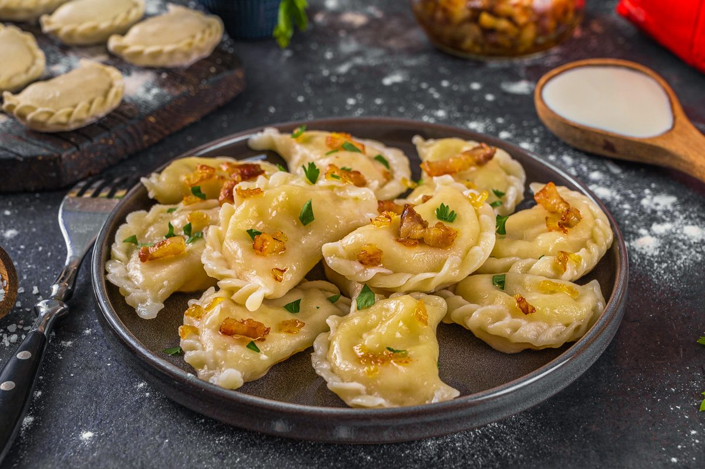
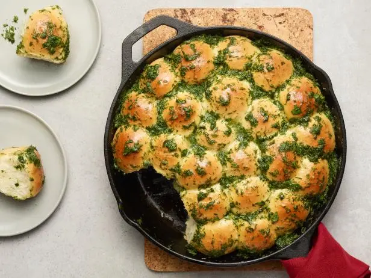
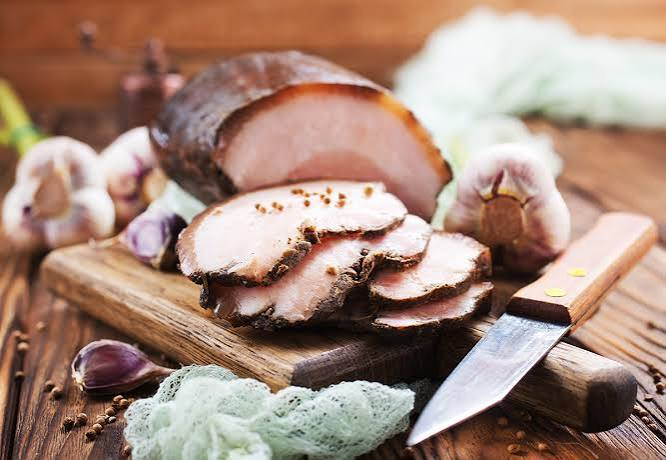

A culinária ucraniana é marcada por sopas encorpadas, massas recheadas e pratos pensados para o inverno rigoroso da região.

Borscht
Sopa de beterraba, o prato mais famoso do país. Pode ser servida quente ou fria, geralmente com uma colher de creme de leite azedo por cima.
Sopa
Varenyky
Massa recheada cozida, parecida com um pastel cozido. Pode vir com batata, repolho, carne ou frutas como recheio.
Massa
Pampushky
Pães macios com cobertura de alho, tradicionalmente servidos como acompanhamento do borscht.
Acompanhamento
Salo
Toucinho curado, servido em fatias finas com pão escuro e alho. É um dos ingredientes mais tradicionais da culinária local.
Entrada